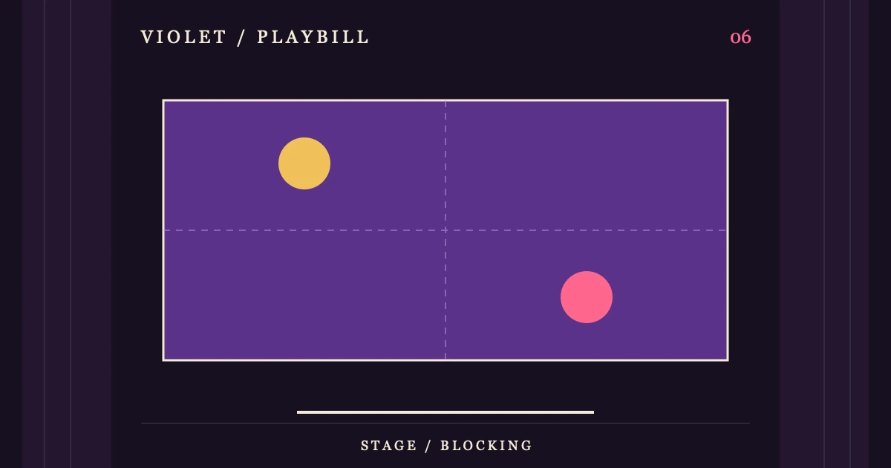

REPERTORY SCENE / 06
[[S6_TITLE]]
[[S6_INTRO]]
场内导览CONTENTS
[[S6_H2_1]]
[[S6_TEXT_1]]
- [[S6_M_LABEL_1]]
- [[S6_M_TEXT_1]]
- [[S6_M_LABEL_2]]
- [[S6_M_TEXT_2]]
- [[S6_M_LABEL_3]]
- [[S6_M_TEXT_3]]
- [[S6_M_LABEL_4]]
- [[S6_M_TEXT_4]]
[[S6_H2_2]]
[[S6_TEXT_2]]
小屏可在表格内横向滚动。
| [[S6_TABLE_COL_1]] | [[S6_TABLE_COL_2]] | [[S6_TABLE_COL_3]] |
|---|---|---|
| [[S6_TABLE_ROW_1]] | [[S6_TABLE_CELL_1_1]] | [[S6_TABLE_CELL_1_2]] |
| [[S6_TABLE_ROW_2]] | [[S6_TABLE_CELL_2_1]] | [[S6_TABLE_CELL_2_2]] |
| [[S6_TABLE_ROW_3]] | [[S6_TABLE_CELL_3_1]] | [[S6_TABLE_CELL_3_2]] |
[[S6_H2_3]]
[[S6_TEXT_3]]
[[S6_QUOTE]]
[[S6_QUOTE_ATTRIBUTION]]
常见问题
[[S6_FAQ_Q1]]
[[S6_FAQ_A1]]
[[S6_FAQ_Q2]]
[[S6_FAQ_A2]]
[[S6_FAQ_Q3]]
[[S6_FAQ_A3]]
引用来源
- [[S6_SOURCE_LABEL_1]]
[[S6_SOURCE_NOTE_1]]
- [[S6_SOURCE_LABEL_2]]
[[S6_SOURCE_NOTE_2]]
资料核对：